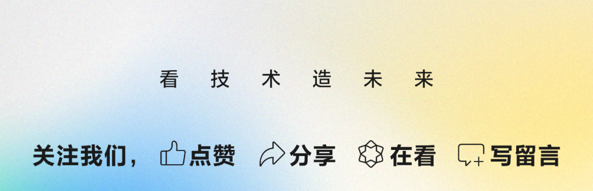

作者：被删
AI 时代赋予 AI 的新角色：AI 铲屎官。
在 AI 很强的现在，依然很多人会认为，AI 更适用于新项目快速迭代，但很难在一个背负着沉重的历史包袱的项目中起到很大的用处。
最近大半年都在重构项目，从前期使用 AI 依然困难重重，到如今 AI 能高效定位问题、给到十分贴合项目需要的解决方案，中间特别明显的一个转折点，在于开始给项目搭建 AI 上下文工程。
当然，这一年来 AI 的能力本身也在不断加强，我们项目的质量和架构的合理性在我的努力重构下也在稳步提升，但 AI 上下文的搭建依然起到了十分关键的作用。
今天给大家分享的，主要是如何在重构过程中，将 AI 总是胡言乱语，变成了 AI 也可高效助力的一个项目。
思考：AI 提效到底是在提效什么？
在过去的一年里，AI 的能力有大幅度的提升，从最初只能做点明确的小任务，到如今能协助排查问题、提出可落地的解决方案、自执行落地和自测等等，在我们工作中参与的幅度越来越大。
如今很多新业务直接是 AI 原生项目，意味着从立项到上线，开发未亲自写过一行代码，基本上都是 AI 自行完成的。
但即使在 AI 能力很强的今天，大家还是有些共识，比如一个历史债务很重的项目中，AI 能发挥的作用很少，还是需要开发的介入更多。
这很大一部分原因是：AI 的上下文知识不够。
业务瓶颈常在上下文
其实 AI 和开发并没有太大的区别，很多时候区别只是在于，我们比 AI 拥有更多的上下文，这些上下文包括：
业务的历史背景，项目的整体协作方式（与其他模块的关系等）。 过去的需求文档、技术文档，可能存在其他地方或者是开发和产品的脑袋中。 项目真实运行情况，哪些分支代码上的功能还在跑的、哪些只是历史兼容但不会运行到的。 架构设计和技术债务情况，哪些技术改造只做了一半，未改造彻底等。
这些问题，不管是 AI 还是新加入业务的开发来说，都会遇到，而我们过往经常做的定规范、写文档、做通用化/平台化方案等很多工作内容，都是为了降低对接和沟通成本。
现在我们很多人都会让 AI 写代码，开发成本大大降低了，如今困扰我们的往往是沟通协作成本。人和人之间如此，人和 AI 之间也是如此。
重构成为 AI 可维护项目
回到话题，我们常说的 AI 提效，到底是指什么？
在过去这一年中 AI 已经逐渐参与到很多业务中，十分肯定的是它能提效我们的开发过程，但 AI 还能做更多，包括排查问题、系统现状分析、技术方案设计和落地、代码 Review 等等。如今很多人也已经在尝试让 AI 参与更多，但大多数依然仅限于 AI 原生的新业务。
旧业务和新业务，其实区别便在于 AI 的上下文是否充分。对于历史债务多、维护成本高的项目来说，其实正适合带着 AI 进行重构，重构的过程中给 AI 逐渐补充足量的上下文信息，这样重构后我们就能得到一个 AI 可维护的项目。
过去我们重构，原因无非是架构设计已无法支持业务迭代、技术债务过重需要专项治理、来新人了大家都按自己的想法重做一遍。
如今我们重构，除了治理项目中的既有问题，更是给 AI 添加足够的上下文信息，使得 AI 能参与到日常排障、功能迭代、架构优化中，让开发从日常的高成本维护和反复沟通协作中减负，达到真正的项目提效。
AI 上下文内容建设
我从去年年底就开始治理我们项目的技术债务，今年刚开始的时候，AI 能力已经很强了，但依然经常会判断出错。
判断不准确的原因除了架构过度设计、同时设计的方案落地过程变了形之外，还有很多并没有真实在运行的代码。这些代码是否真的运行，不管是开发还是 AI 都无法通过相关引用判断，因为代码有真实的引用，但在真实运行时可能某个链路却彻底不会运行到。
这些上下文除了 AI 无非获取，很多时候开发自己也无法获取。
过去很长的工程项目中，上下文信息的维护也常常是业务痛点。团队知识的建设很重要，但是无法体现价值，因此往往因为性价比等各种原因，几乎没有团队能将团队知识建设得很好，甚至很多技术强的团队反而崇拜“自己看代码解决”的协助方式。
开发都不爱写文档，也不爱看文档，每个细节和协作内容都存在各自的脑袋中。信息的不对齐、遗漏导致协作过程中的变形，架构设计、技术方案也常常很难坚定不移地完整落地。
我们过去推崇的功能组件化、平台化、通用化，目标都是为了减少开发和维护成本，因为约束了大家认可的规范和协议，这些规范和协议便是我们协作中的上下文信息。
和 AI 协作也是如此，并且在开发成本已被 AI 大大降低的今天，业务开发的效率往往卡在人与人、人与 AI 的协作中。建设团队文档和知识，是为了减少人与人之间的协作，那么建设 AI 上下文工程，便是为了：同样的事情，应该只需要跟 AI 强调一遍即可。
从 AGENTS.md 开始
AI 的上下文知识沉淀，最简单的方式便是从静态上下文开始，这便是跟着代码仓库走的AGENTS.md。
当然，AI 上下文也是有限的，因此我们需要将项目的信息拆分领域放在对应的位置，只保留最重要的内容放置在项目根目录的AGENTS.md中，比如：
# 知识索引
此处描述各个领域的知识需要去哪里找，比如
- 业务背景知识
- 架构信息&技术方案沉淀
- 通用组件&规范
- 三方的对接系统信息
- 其他业务规范等
## 要求
- AI 代提交代码时，commit message 必须以 `| pub` 结尾（这条为我们项目仓库规范）
### 知识落盘规范
- 根目录 AGENTS.md 和 CLAUDE.md 只保留索引概要（路径 + 1~2 句摘要），不在此堆细节。
- 当对话中出现可复用的规则/兼容性/排障结论/项目知识时，必须就近落盘到对应模块 `AGENTS.md`，并同步更新根目录 AGENTS.md 和 CLAUDE.md 中的知识索引（以模块内容为准）。
- 当发现知识索引出现内容过期或不准确时，主动修改
新建一个根目录的AGENTS.md，是一个简单的开始（此处感谢 yuankai 同学的积极分享）。
带着 AI 一起重构业务
即使在 AI 能力超强的现在，依然有无数的业务不会选择进行重构。“代码还能跑就不要动”，这样的历史教训还在深刻影响着不少人。
这对一个停止迭代需求的业务来说，或许问题不大。但如果项目还在快速迭代，将项目重构成一个 AI 项目，在不远的未来可以逐步放手交由 AI 去做更多的事情。
先简单介绍下我们的小程序教育平台，该平台可以理解为一个面向教育场景的“项目创作 + 课程教学 + 小程序体验/发布”平台。它是围绕教育内容生产、学习过程、项目开发、作品体验和发布管理串起来的一整套系统，核心功能包括：
自由创作/AI Coding：小程序编程/编译/预览/发布、AI 编程 课程学习/课程制作：项目式课程的学习、制作、能力配置，包括小程序预览、富文本编辑知识面板、代码编辑器、AI 对话、答题等各种内容板块 资源管理：学校/班级/学生账号、小程序管理、云开发/混元资源等

自由创作（代码编辑+小程序预览+AI对话+代码版本管理+素材库资源管理）

系统的复杂度拆分为两部份：
前端 WEB 本身的复杂度。除了业务需求上的复杂交互设计（比如课程学习/自由创作/课程制作等复杂板块需要支持宽窄屏+拖拽调整+动画效果），还有需求迭代导致的功能高度耦合（比如多个复杂交互页面逻辑均耦合在一起用 if/else 隔离），以及部份过度设计的技术实现（比如代码编辑器设计支持 OT 协同导致复杂度提升不少）。 项目中还涉及到 WEB 外的其他模块。除了常见的后端模块外，还包括模拟器预览的代码编译模块、项目管理和代码拉取等 Node 模块、AI Agent 模块、付费能力模块，以及三方的能力比如腾讯云、混元等。
对于最复杂的自由创作/课程学习/课程制作页面，近半年的重构对比（AI 分析画的图）：


我们目标是 AI 也能在这种复杂度中有效运作，那么可以带着 AI 把这里的链路和设计一起重构。
AI 怎么知道要怎么做，那当然是我们怎么做，它就怎么做。AI 自行读代码理解依然可能不准确，前期会需要不少引导的工作。
一、移除项目中不再起作用的代码
对于债务较多的业务来说，最混淆视听的无非是设计了许多并没有真正起作用的功能代码，比如我们项目：
纯 WEB 项目，但因为复制粘贴旧的客户端兼容代码改造，遗留了大量的环境判断 if/else 代码 代码编辑设计了 OT 协同，但由于各种原因最终落地时只是纯 HTTP 请求同步代码，并没有用到协同 项目曾经尝试调整为 WebIDE 的架构，最终没有落地，但模块间保留了 N 种不一致的消息通信方式 AI Agent 功能曾经在 WEB 端实现，如今迁移到了单独的 Node 模块，但前端新旧链路耦合严重，难以分辨哪些代码还在生效
这些遗留的问题不仅对开发来说很吃力，对 AI 来说也很吃力，因为它无法通过单纯的代码是否有引用来判断代码是否还真实有效，有些判断条件甚至写到了环境变量中，即使是同个项目的开发也很难辨认。
但我们在梳理治理这些债务的过程中，可以同时借助 AI 来快速辨别完全无引用的代码，再结合项目真实运行情况和从同事那问来的背景情况，和 AI 一起治理重构这些代码，同时让 AI 记录沉淀下来。
屎山清理第一步：让代码跑起来和看上去一致。
二、做减法，复杂架构简单化
其实大多数的业务里，不需要多高的复杂度。但是实际在开发过程中，过度设计的业务比比皆是。而真正让人害怕的是，过度设计之后并不能改造彻底，更可怕的是，项目在经历几轮重构不彻底之后，落下了许多的历史包袱了。
随着参与的项目数量越多，我越来越能理解这件事：架构设计之所以重要，不是因为它看起来高级，而是因为它能把复杂度压下来。
举个例子，上面提到了我们业务实现了 OT 协同编辑代码，但实际上业务场景里并没有协同的诉求，在可见的未来中也不存在类似的需求。
这是一个过度设计的经典案例，为了追求复杂度而增加复杂度，这种其实在我们很多项目中都比较常见，毕竟做复杂比做简单更能体现价值。虽不赞同，但可理解。
我们总在设计的时候过度考虑未来业务的拓展性，但是实践下来结果往往是业务变化总是跟想象的不大一样。好的架构必然是立足于现在，随着业务变动而调整的。
在代码编辑协同这个案例中，分成了两次重构，分别是：
| 主导方案 |
由于在第一次重构过程中，给 AI 引导添加了不少的上下文信息，在第二次重构过程中 AI 主导的方案整体上比较清晰，判断也基本准确，落地效果也很不错。
屎山清理第二步：将复杂问题简单化。
三、定规范，给项目设置约束边界
真正让一个项目难以维护的，往往不是业务本身有多难，而是缺少约束的规范和边界、以及长时间的持续收敛。
我们项目页面很多，交互也复杂，尤其是高复杂度的自由创作页面和课程制作页面，宽窄屏适配+各板块拖拽+板块出现/隐藏动画效果+国际化支持。

除了业务在快速迭代，开发的架构也在迭代以外，我们设计稿其实也在不断地调整，会出现同样的内容在不同时期的设计稿上不一致等问题，使得项目各个页面看起来问题很多。当然，这里也有不少是开发过程导致样式反复改坏的问题，后面会在自动化测试中统一阐述。
但样式设计是一个比较典型的问题，解决方法也很简单：拉齐设计同学，一起定下项目整体上的规范，包括：页面布局规范（标题&内容&间距）、宽窄屏适配规范、统一组件规范（弹窗&表格&按钮等）、页面滚动规范等等。
样式规范的落地，使用了两种方案的组合：
建设统一组件，将过往设计稿中不符合规范的统一收纳处理。 建设规范沉淀，让 AI 自行检查是否遵循规范，并在 MR 过程中进行规则检测。
规范有了，才能在后续长期的迭代过程中，持续地治理和遵循。
屎山清理第三步：让事情的执行有所依据。
四、定标准，建设自动化测试工程
显而易见，未来越来越多的需求会使用 AI 开发，需求开发、架构改造、问题修复过程中，难以快速判断是否有其他功能受到影响。因此，自动化测试的工程建设势在必行。
在过去，前端之所以很少使用大量的测试用例覆盖，因为前端的变化十分快，用例的维护成本很高。
但如今我们有 AI 了，自动化测试的开发工作量已经大幅度下降。在 AI 的协助下，测试用例维护成本仅剩下了 AI 上下文的维护、token 的成本。
单测/E2E用例覆盖 + MR 流水线回归
用例的搭建和完善并不是一次能达成的目标，需要持续的建设，因此我也拆了好几期进行：
单测核心用于简单功能的测试，都是基于 Mock 数据建设。E2E 则涉及到多页面的链路加载和交互，不少功能会使用线上真实连续运行。真实环境的执行需要配合提供测试账号，也需要在测试完成后进行数据的治理，比如测试过程产生了很多的新建空项目，需要移除，否则测试账号很快便会触碰上限。
这部分的工作，陆陆续续大概花了一两个月。改造前后有特别明显的变化，最大的改善便是：过去每次发布前，我都需要自行回归核心的功能点，尤其是场景不一样但是功能高度耦合的 自由创作/课程学习/课程制作 这几个板块的页面。
当然，在方案上线并开始运行的一段时间，也是会人工辅助验证，确认用例覆盖是否足够和有效。现在基本上不再需要人工测试，从去年的每次发版必出核心链路的问题，到近几个月的发版基本很少用户反馈了，而我们的用户量其实是在持续上涨的。
视觉用例回归建设
去年的时候，项目整体上还处在焦头烂额地排查问题/修复问题、治理历史债务、快速迭代新需求的阶段，样式问题的治理基本上只能 case by case 解决。
今年上半年把大部分债务治理完成后，单测和 E2E 用例能力覆盖稳定了，样式问题便开始出现在我们视野范围中了。
其实前面在“定规范”的部分，也阐述了样式问题的治理方案，但依然无法解决一个问题：样式在不知不觉中会被改坏。样式被改坏的原因很多，包括改动统一组件、自测走查不仔细、AI 改动不确定边界等等，这里不仅对开发来说产生不少的反复开发工作量，对设计同学来说更是需要反复走查提问题的炸裂存在。
基于项目已经搭建好了整体的自动化测试框架，新增视觉用例的流水线便不再痛苦。基于针对项目定制的 Docker 流水线环境，新增一条视觉回归的流水线，并将视觉回归的产物跟随着代码仓库走。
当然，视觉回归并不是一张大的截图就能解决所有样式问题，考虑到流水线稳定性情况，是要给每个视觉用例的像素偏差定个范围值的。因此，视觉回归的整体解决方案会是：
大的截图用于检测大的布局异常问题，像素偏差允许范围会比较高，识别不了小问题（文字、圆角等问题）。 各个组件拆出小的视觉用例，补充各种状态下的样式回归，像素偏差会限制比较严格，用于发现精确问题。
这样的好处是，即使开发过程未能准确判断测试用例的异常是否符合预期，让 AI 误动了其他的样式来让流水线通过，我们也能直接在 MR 过程中发现。
下图便是发现流水线异常，AI 在修复过程中把样式改动到了，在 MR 的时候就可以明显发现：

MR 自定义规则
除了流水线确保已有功能没有改坏以外，我们还需要确保新增的功能是否都能按照定下的规范来执行。为此，我们需要一个在 MR 流水线中进行 AI 评审的能力。
这部分原本以为要自己建设，正好看到工蜂有类似的能力，便试用上了。操作也很简单，在项目中添加 AI 评审的规则，然后在工蜂中选择该规则文件给到 AI，如图：

当然，这个能力刚补充上线，目前还在实践中，还没有运行足够的时间去验证可行性和效果。
至此，我们的每次 MR 合入时，都需要通过以下流水线：

屎山清理第四步：避免问题反复出现。
五、将债务治理常态化
前面也提到过，债务的产生，很多时候来自于重构和方案落地的不够彻底，一次次遗留的问题，久而久之便成了债务。
这些问题在很多历史项目中我们都能看到，因为几乎所有项目都会存在这样的问题：
架构设计跟不上业务迭代，变成了技术债务 技术重构没有执行彻底，产生了新的技术债务 项目反复迭代&改造，新旧债务层层叠加
在过去，我看过的所有真实在跑的项目都没能彻底完成技术改造，很多时候大家都兴致冲冲起了个头，后续因为业务方向调整、业务需求挤压、性价比下降等各种原因未能改造彻底，总是留下不少的尾巴。
这个问题，在 AI 加入之后，我们可以得到更好地解决：将周期集中的技术专项改造，变成日常开发的常规化改造。
解决方案也很简单，无非是通过前面的“定规范”，补充持续的治理方向，在后续迭代的过程中，AI 会遵循新规范顺手治理历史问题。同时，通过 MR review 时定下的 AI 评审，来检测是否有新增问题。
屎山清理第五步：每天做一点，事情更长久。
结束语
本来想用 AI 回顾我们代码仓库近半年的演化总结文章，看了下，言之凿凿，食而无味。罢了，还是手写有味道。
AI 能做的事情越来越多了，我们干涉的越来越少了。什么时候能完全放手呢？我们应该真的放手吗？
作为旧时代守门人的老古董，我觉得落地执行、沟通提效、记录沉淀都可以交给 AI，唯独思考不可以。
正如 AI 无法写出我的思考，即使它读了足够的代码和文档、也是从AGENTS.md开始便跟随着我一路重构，但还是少了一些思想内核吧。

